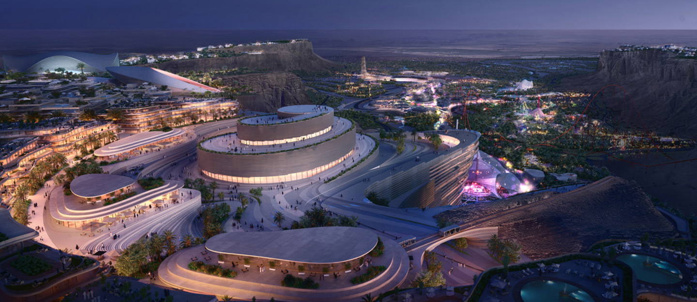
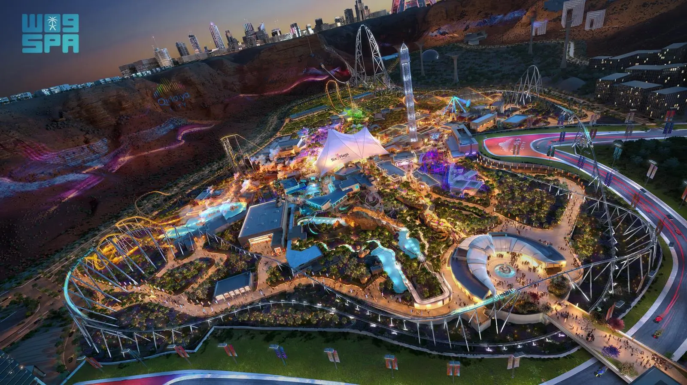
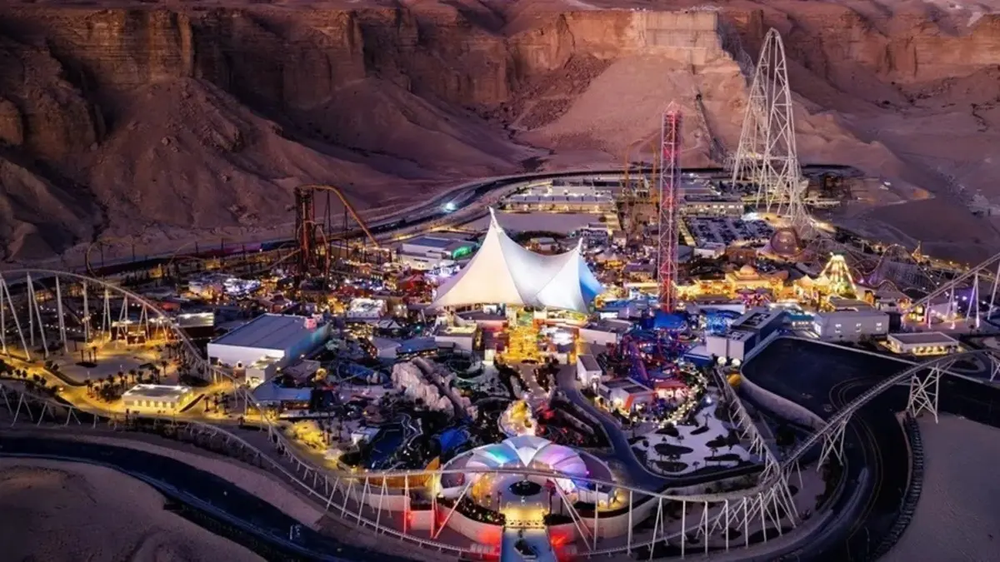
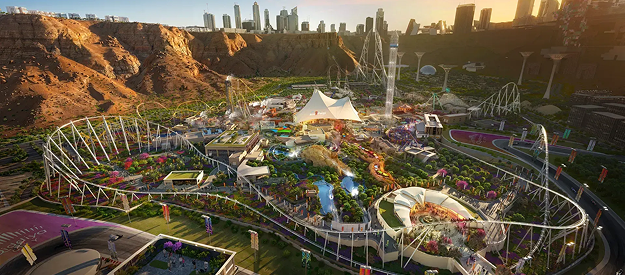
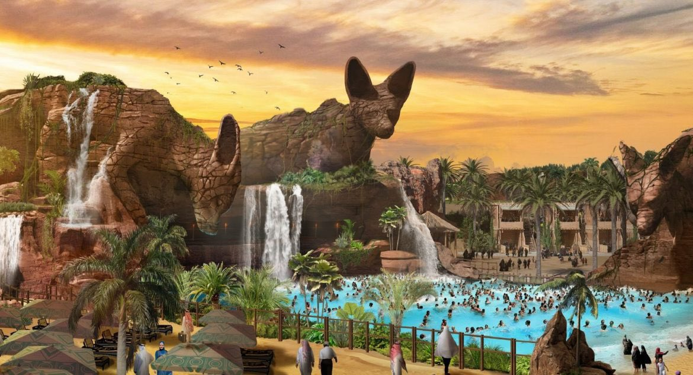
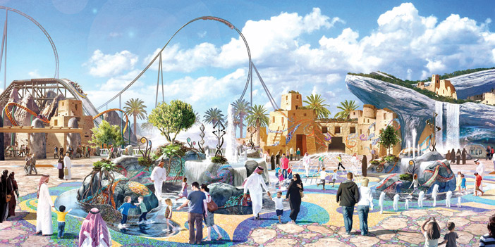

The future destination for entertainment, sports, and culture in Saudi Arabia
View Project ImagesQiddiya is one of the major projects of Saudi Vision 2030, aiming to become the capital of entertainment, sports, and arts. It is located west of Riyadh and includes world-class facilities such as theme parks, sports venues, cultural centers, and tourist resorts.
The project aims to create an integrated environment that combines entertainment, sports, and culture, providing major economic and tourism opportunities and attracting visitors from around the world.
Qiddiya was announced in 2017 as one of the most important strategic projects under Saudi Vision 2030, aiming to develop a global destination for entertainment, sports, and arts.
The project is supervised by the Public Investment Fund (PIF) and is considered one of the largest initiatives supporting the national economy and diversifying income sources.
The project covers more than 334 square kilometers, with an estimated cost of tens of billions due to the massive entertainment, sports, and cultural facilities being developed.
Qiddiya aims to attract millions of visitors annually, create thousands of jobs, and enhance the quality of life in the Kingdom by offering world-class entertainment experiences.






Malika Khalid Al‑Johani